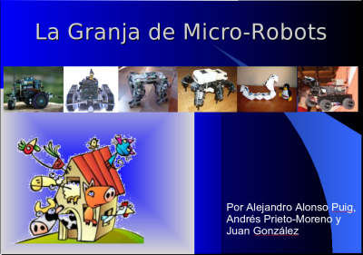

|
"Granja de Micro-Robots”. I Jornadas de ARDE. Málaga. Marzo 2007 |
|
 |
Título: “Granja de Micro-Robots”
Duración: 40 minutos de conferencia + demostraciones
Evento: I Jornadas de ARDE.
Lugar: Centro de arte contemporáneo de Málaga
Fecha: 18 de Marzo de 2007
Ponentes:
Robots enseñados: Skybot, Clónico, PuchoBot, Melanie III, Multicube, Hypercube y Yoshua.
El objetivo de esta charla-show es despertar el interés por la robótica entre los asistentes y hacerles ver que es un mundo divertido, apasionante y sencillo. Cualquiera puede construir su primer robot. Sólo se necesitan ganas. Para ello se comienza mostrando el robot más sencillo, el “hola mundo” de la robótica. Se llama Skybot y es el que utilizamos en nuestros talleres de iniciación. Es un robot abierto. Toda la información está disponible bajo una licencia libre: planos, electrónica y software. Se continúa con el Clonico, un versión del Skybot con una estructura mecánica mejorada y propulsión por orugas en vez de ruedas.
A continuación nos centramos en los robots articulados, que tienen una mecánica un poco más compleja y en los que aparece el problema de la coordinación. ¿Cómo coordinar las diferentes articulaciones para conseguir que el robot se mueva?. Como primer ejemplo se muestra a PuchoBot, un robot cuadrúpedo que tiene 12 articulaciones, y que puede moverse de manera autónoma o controlado a través del PC. El siguiente es Melanie III, un robot hexápodo de tres grados de libertado por pata y más de 30 sensores. La coordinación de las articulaciones se resuelve mediante programación gestual o generación de trayectorias a partir de ondas.
En la siguiente parte se habla sobre una nueva tendencia surgida en 1994: La robótica modular. Son robots construidos por la unión de módulos. Se muestran los módulos Y1 y cómo con ellos se han realizado dos configuraciones diferentes. Una es el robot “gusano” Cube Revolutions, formado por 8 módulos Y1 conectados con la misma orientación. Este robot sólo se puede mover en una dimensión. La otra configuración es Hypercube, también formada por 8 módulos pero con diferentes orientaciones. El resultado es que se puede mover en 2D, como una serpiente.
Durante esta charla nos centramos fundamentalmente en las demostraciones por lo que no hicimos unas transparencias específicas. Utilizamos las mismas que las de la Quijote Party en Ciudad Real, en Julio de 2006.
Robot “hola mundo” Skybot
Robot Cuadrúpedo PuchoBot
Robot Hexápodo Melanie III
Información sobre los módulos Y1
Robot ápodo Cube Revolutions
[El cuaderno de bitácora está disponible en este enlace]